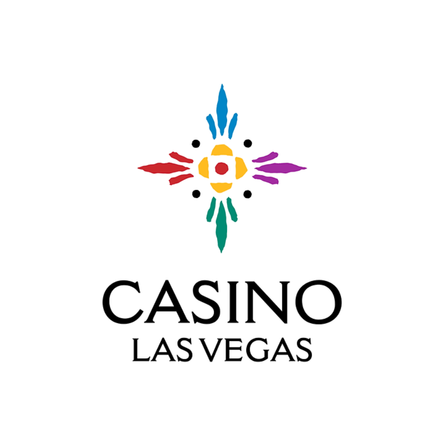

Mohamed Yunus
Technical Quality Business Analyst
I turn complex business requirements into clear documentation, comprehensive test coverage, and confident release decisions. With 4+ years of experience across the iGaming, casino gaming, payments, and US banking domains, I specialize in gathering and analysing requirements, creating BRDs, FSDs, user stories, and functional specifications, while ensuring high-quality product delivery through UAT, SQL data validation, and Power BI reporting. I work closely with business stakeholders, product managers, developers, QA teams, and clients to deliver scalable, data-driven solutions in Agile environments.
About
Bridging business goals and technical teams.
Technical Quality Business Analyst with 4+ years of experience in the iGaming, casino gaming, payments, and banking domains. Experienced in gathering and analysing business requirements, conducting stakeholder workshops, and preparing comprehensive BRD, FSD, SRS, user stories, and process flow documentation. Skilled in leading UAT, validating business requirements, ensuring software quality, and collaborating with product managers, developers, QA teams, and business stakeholders to deliver high-quality solutions.
Hands-on experience in the USA and Canada payment ecosystem, working with leading payment providers such as Interac and Stripe, along with banking and payment integration projects. Strong understanding of payment workflows, transaction processing, player deposits, withdrawals, promotions, compliance, and reconciliation within regulated gaming environments.
Proficient in SQL, Python, and Power BI for data validation, transaction analysis, player behaviour analysis, promotional performance tracking, reporting, and business intelligence. Experienced in analysing large datasets to identify trends, validate business rules, and support data-driven decision-making.
Extensive experience working with leading iGaming platforms and game providers, including Evolution, NetEnt, Red Tiger Gaming, Hacksaw Gaming, Mohegan Sun, Light & Wonder, Booming Games, iPro, Konami, and IGT (International Game Technology). Strong understanding of casino game integrations, third-party provider coordination, release validation, promotional configuration, and platform operations.
Experienced in Agile and Scrum environments, working closely with cross-functional teams and managing stakeholders across India and North America, including clients from the United States and Canada. Adept at bridging the gap between business and technology, driving requirement clarity, improving operational efficiency, and delivering scalable, high-quality business solutions.
Education
Master of Computer Applications
Jamal Mohamed College, Trichy, 2016 to 2019
BSc Computer Science
Jamal Mohamed College, Trichy, 2013 to 2016
Dashboard
Results, portfolio mix and skill levels at a glance.
Delivery impact
Projects by employer
iPro Games: 6
United Interactive: 3
Projects by type
Skill proficiency
AI and automation
I use Microsoft Copilot and other AI tools to speed up documentation, and n8n workflow automation to produce reports faster and improve day-to-day productivity.
Experience
Where I have worked, most recent first.
Technical Quality Business Analyst
- Analyse business requirements and write BRD and FSD documents with clients.
- Analyse player transactions, game performance and promotion results to support strategy.
- Compare competitor packages and bonus offers to recommend new player packages.
- Propose UI changes from purchase history, aiming to raise purchase and deposit rates by 20%.
- Coordinate UAT, approve unit test cases and deliver audit and test reports.
- Lead team walkthroughs and client demos.
QA Analyst
- Ran UAT across web and mobile, including Mohegan Sun Deal or No Deal LIVE.
- Wrote test cases, executed test cycles and produced test reports.
- Managed player CRM configuration and analysed marketing and player data.
- Improved testing efficiency by 25% and cut feature delivery time by 15%.
Projects
Casino gaming platforms across real money and social play. Each page covers scope, my responsibilities and outcomes.

Deal Or No Deal Casino
Ipro GamesReal money gaming

Deal Or No Deal Live - Social Casino
Ipro GamesSocial casino

Mohegan Sun Pocono
Ipro GamesSocial casino

Mohegan Sun Las Vegas
Ipro GamesSocial casino
Mohegan Sun CT
Ipro GamesSocial casino
FallsView Casino
Ipro GamesSocial casino

Bet United Social
United Interactive GamesSocial casino
Bet United Casino
United Interactive GamesReal money gaming
UltraDragon777
United Interactive GamesSweepstakes social casino
Tools
What I use day to day.
- Requirements
- JIRAConfluence
- Documentation
- Microsoft OfficeGoogle Docs
- Diagramming
- Draw.ioLucidchartVisio
- API testing
- Postman
- Database
- MySQLPostgreSQLSQL Server
- Reporting
- Power BIExcel
- Collaboration
- SlackMicrosoft Teams
- Version control
- GitGitHub
- Cloud
- AWSAzure
- AI and automation
- Microsoft CopilotAI toolsn8n
Certifications
Select a card to open the credential.